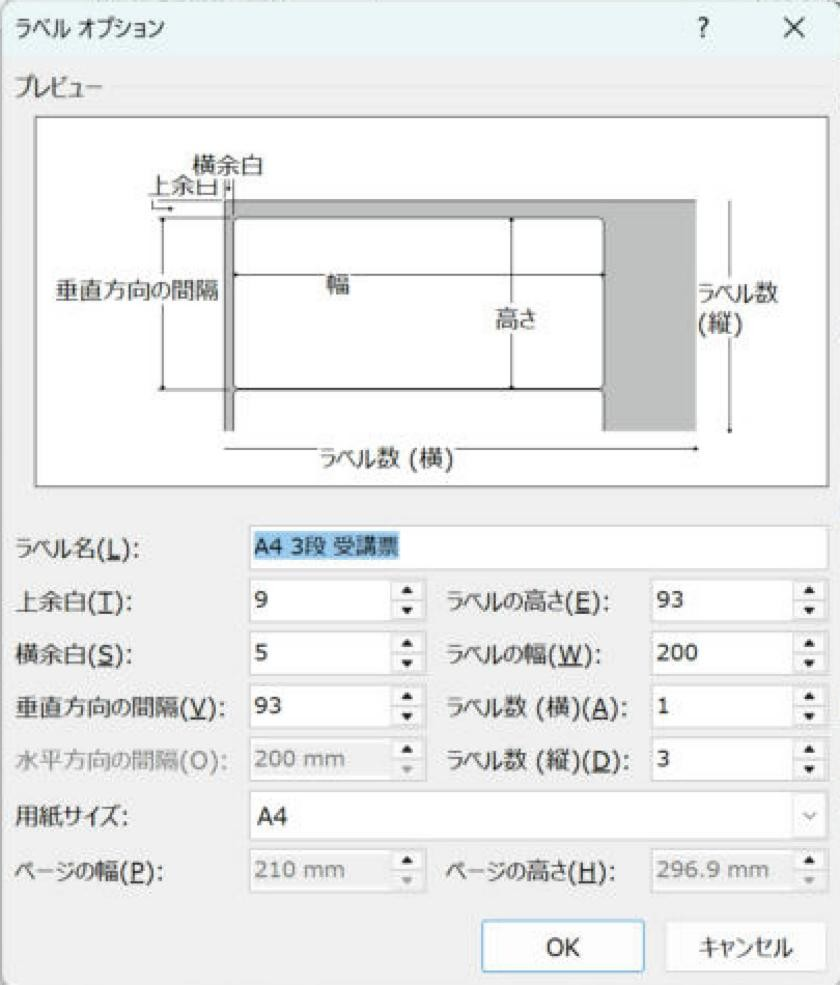
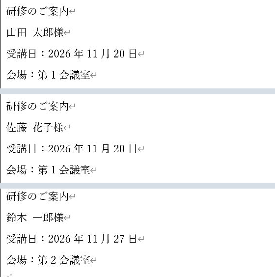
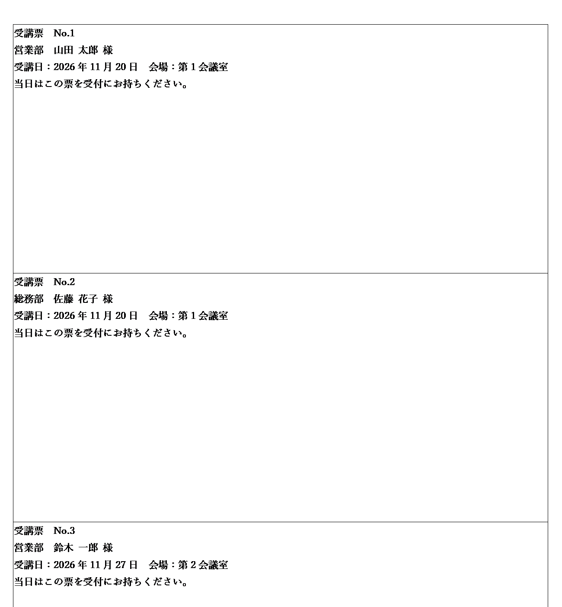

Word差し込み印刷で1枚に複数人分を並べる方法：3人ずつ・4人ずつ・表・一覧
受講票や名札など、1枚の紙に何人分も並べる方法です。同じ大きさならラベル機能、全員の一覧なら「名簿」を使います。
同じ大きさで並べるならラベル機能、全員を続けて一覧にするなら「名簿」を使います。この2つでほとんどの用途に対応できます。
ふつう（Lv.3）
- 方法を選ぶ
- 面数と寸法を決める
- 1面目を作る
- 全ページを照合
目次
この記事でできること
Wordの差し込み印刷は、普通に使うと1人（Excelの1行）につき1ページになります。次のような使い方は、この記事の方法で作れます。
- A4の1枚に、受講票や受付控えを3人ずつ並べて印刷し、切り分けて配りたい
- 参加証や名札を4人ずつ・6人ずつ並べたい
- 全員分を改ページなしで続けて並べた一覧表を作りたい
方法の選び方
| 方法 | できあがり | 向いているもの | 手間 |
|---|---|---|---|
| 方法1：ラベル機能を使う | 用紙を同じ大きさの枠に分け、枠ごとに1人 | 参加証・名札・受付票など、同じ大きさで並べるもの | 少ない（Next Recordを自動で入れてくれる） |
| 方法2：「名簿」（ディレクトリ）差し込み | 全員分を改ページなしで続けて並べる | 全員の一覧・名簿・カタログ | 少ない |
| 応用A：レターに「次のレコード」を自分で入れる | 1ページの中に、決めた人数分のブロック | 大きさがそろわない様式、1ページに2〜3人分の案内など | ふつう |
| 応用B：表の行ごとに「次のレコード」を入れる | 1ページの表に、1行1人 | 出席簿・受領印欄つきの名簿・チェック表 | ふつう |
同じ会社の人だけを1枚のラベルにまとめたい場合は、連名ラベルの作り方を見てください。
準備：Excelの名簿
名簿の作り方は普通の差し込み印刷と同じです。1行目が見出し、2行目から1行1人、空白行なしにします。日付などはTEXT関数で印刷用の列を作ります（失敗しにくいExcel住所録の作り方）。対象者を絞る場合は、「アドレス帳の編集」のフィルターが使えます（必要な人だけ印刷する2つの方法）。
方法1：ラベル機能を使う（おすすめ）
「ラベル」はシール用の機能ですが、普通のA4用紙を同じ大きさの枠に分けるためにも使えます。2面目以降には «Next Record» を自動で入れてくれるので、いちばん失敗が少ない方法です。
まず「ラベルで3段」を完成させる
- 1段目だけを作り、「複数ラベルに反映」で2段目以降を作ります。
- 「結果のプレビュー」で1ページ目の並びを見ます。
- 「個々のドキュメントの編集」→「すべて」で全員分を出します。
確認4人のデータを3段に入れたら、2ページ目に4人目がいれば正常です。
- 最後の余り枠にタイトルや敬称だけが残った場合は、完成文書で不要な固定文字を除いてから印刷します。
単なる一覧なら、枠を人数分作らず「名簿」を使います。
人数別の早見表（A4・Word側の設定）
「1枚に何人分か」が決まったら、下の表で設定を決めます。ラベル機能（方法1）を使う場合の寸法と、レター・表（応用A・B）で入れる「次のレコード」の数をまとめています。
| 1枚の人数 | 並べ方 | 用紙の向き | 横×縦 | ラベルの幅×高さ | 上余白／横余白 | «Next Record»の数（応用A・B） |
|---|---|---|---|---|---|---|
| 2人 | 上下に2段 | 縦 | 1×2 | 200 × 140 | 8.5／5 | 1つ |
| 3人 | 上下に3段 | 縦 | 1×3 | 200 × 93 | 9／5 | 2つ |
| 3人 | 左右に3列 | 横 | 3×1 | 95 × 190 | 10／6 | 2つ |
| 4人 | 2×2 | 縦 | 2×2 | 100 × 140 | 8.5／5 | 3つ |
| 6人 | 2列×3段 | 縦 | 2×3 | 100 × 93 | 9／5 | 5つ |
| 8人 | 2列×4段 | 縦 | 2×4 | 100 × 70 | 8.5／5 | 7つ |
| 10人 | 2列×5段 | 縦 | 2×5 | 100 × 56 | 8.5／5 | 9つ |
| 12人 | 3列×4段 | 縦 | 3×4 | 66 × 70 | 8.5／6 | 11個 |
- «Next Record»の数は「1枚の人数－1」です（1人目には入れないため）。3人ずつなら2つ、4人ずつなら3つです。
- ラベル オプションの「水平方向の間隔」「垂直方向の間隔」は、ラベルの左端（上端）から次のラベルの左端（上端）までの長さです。すき間なしで並べるなら、それぞれラベルの幅・高さと同じ値にします。
- 必要な枚数は「人数 ÷ 1枚の人数」を切り上げた数です。例：3人ずつで10人なら4枚（最後の1枚は1人分）。
寸法はA4（210×297mm）で、上下左右に5〜10mmほどの印刷できない余白があるプリンターを想定した目安です。環境により結果が異なる場合があります。まず普通紙で1枚試してください。
例：A4に3人ずつ（受講票）を作る
受講票・面談票・受付控えなど、切り分けて1人ずつ渡すものを想定します。

- 「差し込み文書」→「差し込み印刷の開始」→「ラベル」→「新しいラベル」を選びます。
- 早見表の「3人・上下に3段」のとおりに入力します：用紙A4、横1・縦3、幅200・高さ93、水平・垂直方向の間隔は200・93、上余白9・横余白5。ラベル名は「A4_3段_受講票」などにします。
- 「OK」でラベルの寸法を登録し、「ラベル オプション」でも「OK」を押します。
- 「宛先の選択」→「既存のリストを使用」で名簿をつなぎます。横1列の場合、「水平方向の間隔」は幅と同じ値が自動表示され、入力できないことがあります。そのまま進めます。
- いちばん上の枠だけに受講票の中身を作ります（下の例）。
- 「複数ラベルに反映」を押します。2段目・3段目の先頭に «Next Record» が付いた同じ中身がコピーされます。
- 「完了と差し込み」→「個々のドキュメントの編集」で全員分の文書を作ります。
確認3人ずつ別の人になっているか確認してから印刷します。
| 行 | 入れるもの |
|---|---|
| 1行目 | 受講票 No.«MERGEREC» |
| 2行目 | «部署» «氏名» 様 |
| 3行目 | 受講日：«受講日_印刷用» 会場：«会場» |
| 4行目 | 当日はこの票を受付にお持ちください。 |



A4を4つに分ける例
- 「差し込み文書」タブ →「差し込み印刷の開始」→「ラベル」を選びます。
- 「ラベル オプション」で「新しいラベル」を押します。
- 次のように入力します（A4を縦2×横2の4つに分ける例）。
| 項目 | 値 |
|---|---|
| 用紙サイズ | A4（210 × 297 mm） |
| 横に並ぶラベルの数 | 2 |
| 縦に並ぶラベルの数 | 2 |
| ラベルの幅 ／ 水平方向の間隔 | 100 mm ／ 100 mm |
| ラベルの高さ ／ 垂直方向の間隔 | 140 mm ／ 140 mm |
| 上余白 ／ 横余白 | 8.5 mm ／ 5 mm |
- ラベル名（例：「A4_4面_参加証」）を付けて「OK」を押します。
- 「宛先の選択」→「既存のリストを使用」でExcelの名簿をつなぎます。
- 左上の1面目だけに、文字・罫線・差し込みフィールド（«氏名» «部署» など）を入れてレイアウトを作ります。
- 「複数ラベルに反映」（ラベルの更新）を押します。2面目以降に、1面目と同じ内容が «Next Record» 付きでコピーされます。
確認「結果のプレビュー」で、4つの枠が別の人になっていれば成功です。
余白と間隔は、プリンターの印刷できる範囲によって調整が必要です。環境により結果が異なる場合があります。
1面目を直したら、もう一度「複数ラベルに反映」を押すと、2面目以降も直ります。全部同じ人になる、1人飛ばしになるといったつまずきはNext Recordの基本を見てください。
方法2：「名簿」（ディレクトリ）差し込みで一覧にする
全員分を改ページなしで続けて並べたいときは、差し込みの種類を「名簿」にします。英語版や古い説明では「ディレクトリ（Directory）」と呼ばれる機能です。«Next Record» を入れなくても、文書の中身が人数分くり返されます。
- 新しい文書で「差し込み印刷の開始」→「名簿」を選び、Excelの名簿をつなぎます（メニューでは「名簿(D)」と表示されます）。
- 1人分の内容だけを作ります。例：«社員番号»（Tab）«氏名»（Tab）«部署» と入力して改行します。
- 「完了と差し込み」→「個々のドキュメントの編集」→「すべて」を選びます。全員分が1つの新しい文書に続けて並びます。
- できた文書の先頭に、見出し（「社員番号 氏名 部署」など）を手で入れてから印刷します。
- 「名簿」差し込みでは、差し込み文書に書いた見出しも人数分くり返されます。見出しは差し込んだ後の文書に入れます。
- 1人分を1行の表にして差し込むと、表が人数分つながった一覧になります。ただし、表と表の間にすき間が入る場合があります。
- 「名簿」は「完了と差し込み」→「個々のドキュメントの編集」で完成文書にします。他の出力方法を前提にせず、完成文書から通常の印刷を行います。
「名簿」差し込みで表を使ったときの表示は、環境により結果が異なる場合があります。
仕上げ：余り枠・切り取り線・横向き3列
最後のページの余り（空の枠）
3人ずつで名簿が10人なら、4枚目は1人分だけ埋まり、残り2つの枠は空になります（4人ずつで10人なら、3枚目の残り2枠が空）。空の枠に「様」や「受付番号：」のような固定の文字だけが印刷されて困るときは、次のどれかにします。
- 差し込んでから消す（簡単）：「個々のドキュメントの編集」で新しい文書にしてから、最後のページの空の枠を手で消します。
- 文字ごと出し分ける：「ルール」→「If…Then…Else」で、固定の文字もデータがあるときだけ表示します（設定方法）。「受講票」「受講日：」などの見出しも同じように出し分けられます。枠ごとに設定が多くなるので、まずは「差し込んでから消す」方法で十分なことがほとんどです。
- 人数をそろえる：空いた枠を予備として使うなら、そのままにします。
切り取り線を入れる
- ラベル機能では、ラベルの表示用の枠線は印刷されません。1段目の下端に点線の罫線を引いておくと、「複数ラベルに反映」で各段にコピーされます。
- レターの表で作る場合（応用記事）は、表の罫線を「点線」にすると、そのまま切り取り線になります（「テーブル デザイン」→「ペンのスタイル」で点線を選び、行の境目をなぞる）。
- 「✂ ‐‐‐‐‐‐‐‐」のような文字を段の下に入れる方法もあります。
左右に3列（A4横）にしたいとき
名札や小さな案内カードなら、用紙を横向きにして左右3列に並べる方法もあります。早見表の「3人・左右に3列」の寸法を使います。レターの表で作る場合は「3列×1行」の表にして、2列目と3列目のセルの先頭に«Next Record»を入れます（応用記事）。
確認のしかた
通常は1面目を修正して「複数ラベルに反映」を押し、完成文書で人数・順番・最後の余りを確認します。Alt+F9のコード表示は、自動反映で直らない場合の補助確認です。
- Alt＋F9を押すと、差し込みフィールドの中身（コード）が表示されます。«Next Record» は { NEXT } と表示されます。1人目の場所にないこと、2人目以降の先頭に1つずつあることを確認します。もう一度押すと元に戻ります。
- 「結果のプレビュー」の矢印は1人ずつ進むため、複数人を並べた文書では、ページの区切りと合わないことがあります。全体の並びは「個々のドキュメントの編集」で新しい文書にして確認します。
- 新しい文書の総ページ数が「人数 ÷ 1ページの人数（切り上げ）」になっているかを見ます。
プレビューでの表示のされ方は、環境により結果が異なる場合があります。
段の位置だけでなく、隠れた文字も確認する
行の高さを固定すると段の位置を保てますが、長い文字が下で切れる場合があります。長い住所・会社名で最後まで読めるかを確認します。
上下余白9mmで93mm×3段にすると、A4の高さを使い切ります。表の後ろの段落が次ページへ出る場合は、末尾段落の文字・行間・段落前後を小さくするか、各段を92mmなど少し小さくして空きを確保します。本文が隠れていないかも確認します。
よくあるつまずき
| 症状 | 原因と直し方 |
|---|---|
| 1ページの中が全部同じ人になる | «Next Record» が入っていません。2人目以降の先頭に入れます。 |
| 1人ずつ飛ばされる | «Next Record» が多すぎます（同じブロックや同じ行に2つ以上ある）。Alt+F9 で確認して1つにします。 |
| 1人目がいない（2人目から始まる） | 1人目のブロックの前にも «Next Record» があります。1人目には入れません。 |
| 白紙のページが混ざる | ブロックがページからはみ出しているか、文書の最後に空の段落があります。 |
| 表の1行の中で別々の人のデータになる | «Next Record» が行の途中のセルにも入っています。行の最初のセルだけにします。 |
| 部署ごとに1枚にまとめたい | Wordの差し込みだけで「部署が変わったら改ページ」は難しいため、部署でフィルターして部署ごとに差し込むか、Excel側で部署ごとの表を作ります。 |
早見表の寸法でA4のラベルを作り、8人を差し込みました。1×3は3ページ、2×2は2ページ、2×5は1ページ、A4横の3×1は3ページです。どれも「人数÷1枚の人数」の切り上げと一致しました。
画面はWindows版の例です。版によって名称や配置が異なる場合は、同じ操作名を探してください。